Nous connaissons les huiles essentielles dans leur flacon.
Mais à quoi ressemblent les plantes dont elles sont extraites ?
Plus d'informations sur les huiles essentielles et leurs utilisations sur ma page Instagram !
Gouache
Juin 2019
 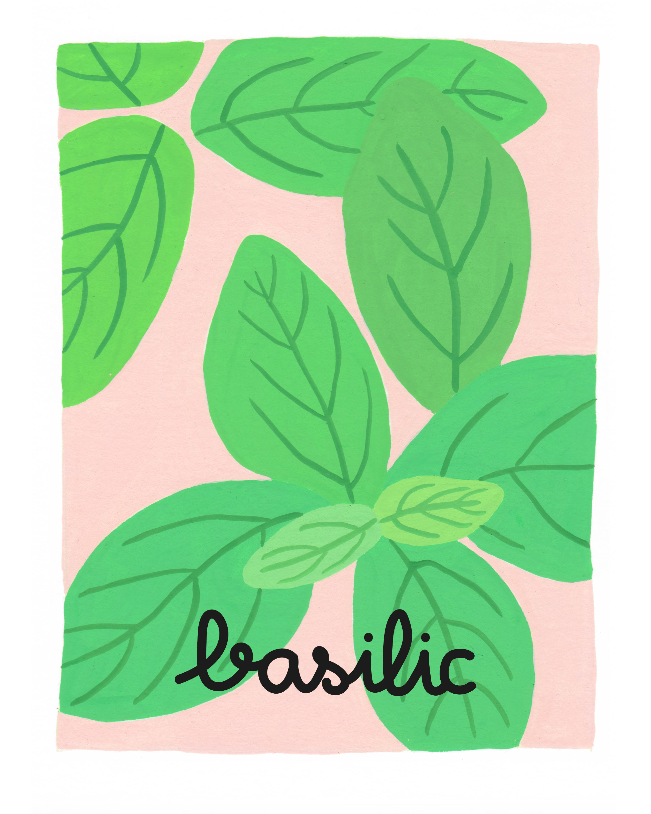
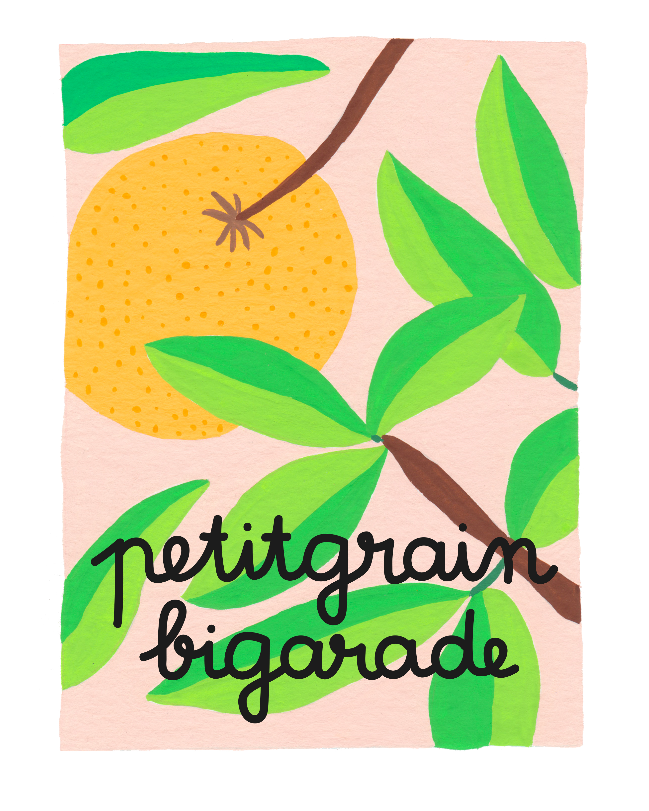
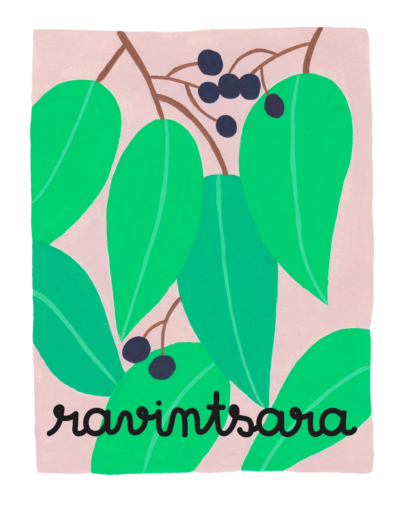
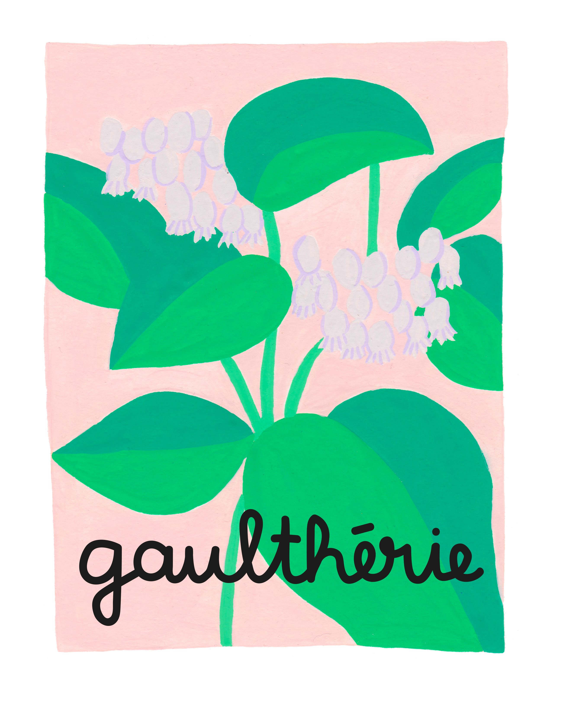
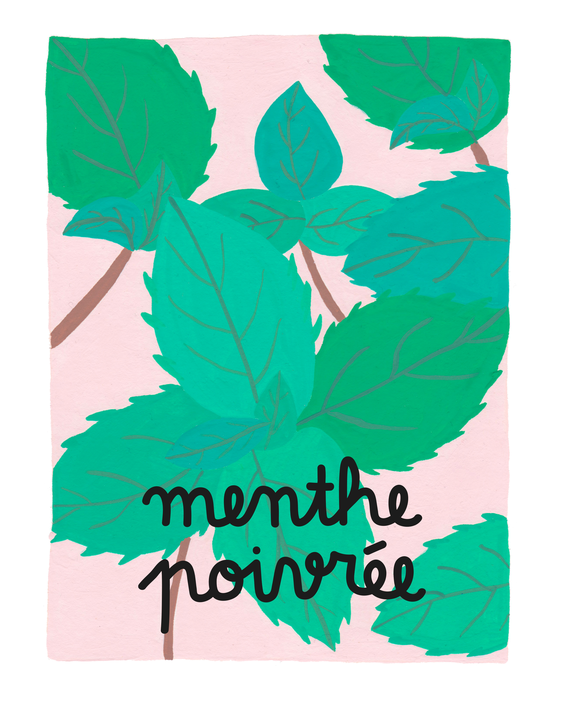
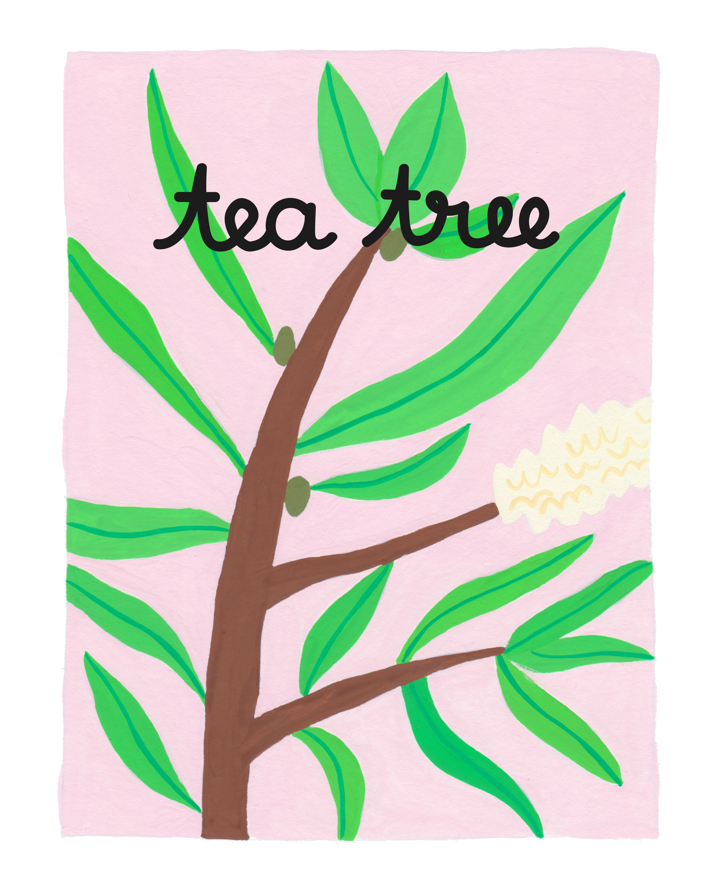
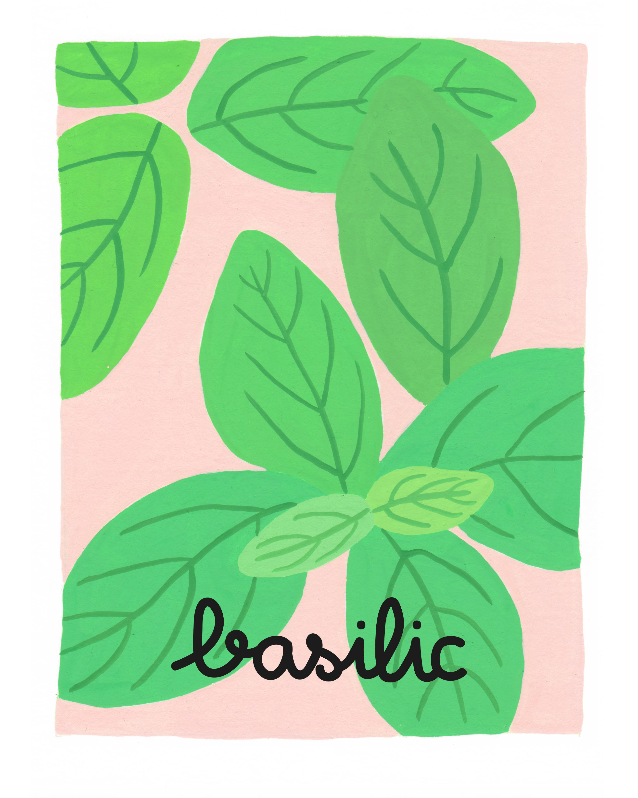
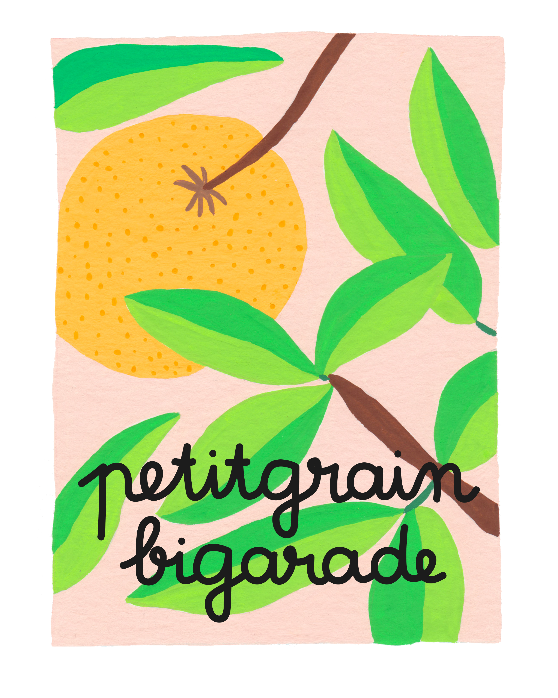
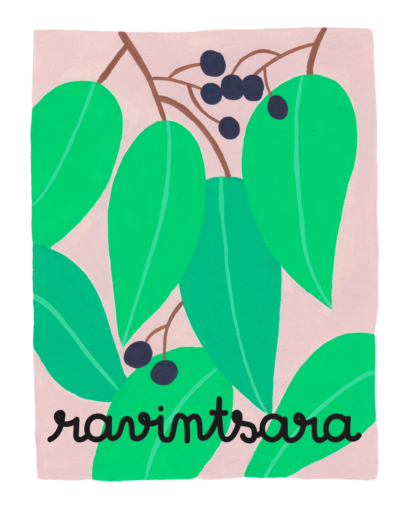
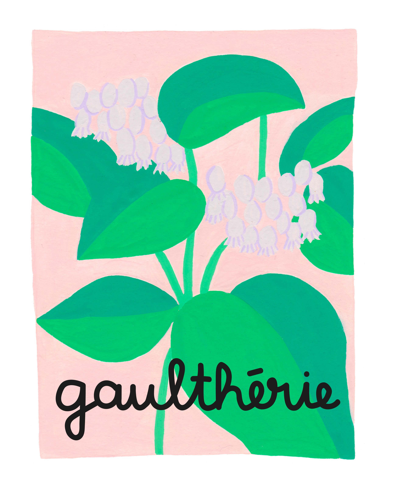
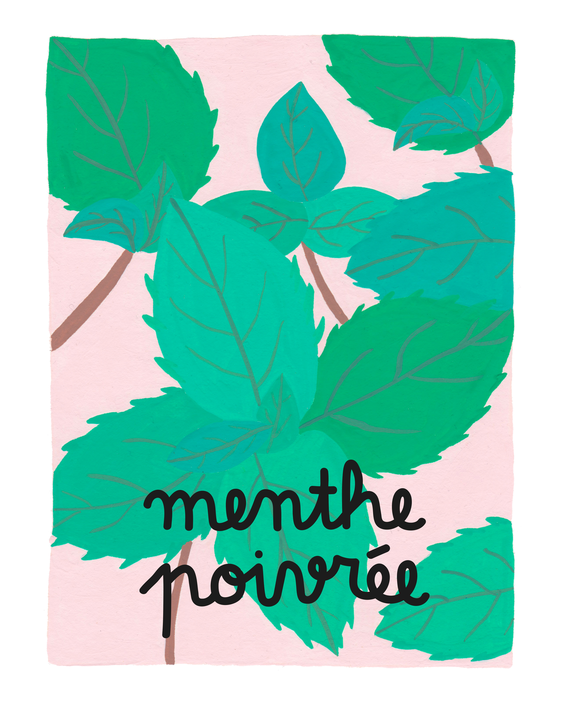
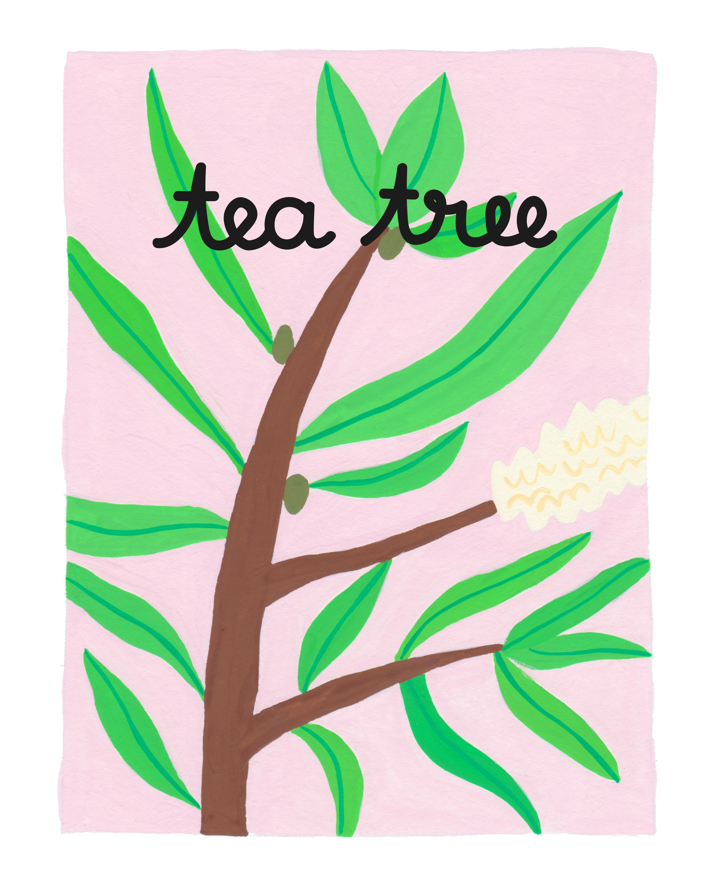